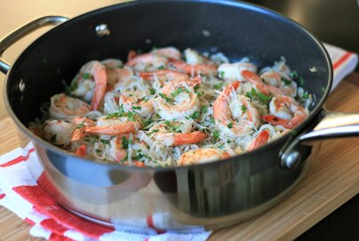

Return to Index
Shrimp Scampi

Description
Shrimp scampi made keto-friendly by using shirataki noodles. You can double
the amount of crushed red chiles for an extra kick! Grate some fresh parmesan
on top before serving, if desired.
Ingredients
- 2 8oz packages of shirataki noodles, drained and rinsed.
- 1 T olive oil
- 1 T minced shallot
- 2 clove garlic, minced
- 1/4 tsp red pepper flakes
- 12 oz raw shrimp, peeled and deveined
- 1/4 tsp salt
- 1/8 tsp ground black pepper
- 3 T fresh lemon juice
- 3 T dry white wine
- 2 T butter
- 1 T chopped fresh parsley
Steps
- Cover shirataki noodles with water and bring to a boil. Boil for 5 minutes. Drain.
- Return drained noodles to the saucepan and cook over medium heat to remove any excess moisture, 5 to 6 minutes. Remove from heat and set aside.
- Drizzle olive oil into a large skillet over medium heat. Add shallot and stir until translucent, 2 to 3 minutes. Take care not to burn. Add garlic and red pepper flakes; stir for 1 minute. Add shrimp and cook for 2 to 3 minutes per side, taking care not to overcook. Season with salt and pepper.
- Transfer shrimp to a bowl, reserving pan drippings in the skillet. Whisk lemon juice and white wine into the skillet. Add butter and cook until fully incorporated and sauce begins to thicken slightly, 3 to 4 minutes.
- Return shrimp to the skillet. Add noodles. Sprinkle with parsley and toss to combine.
Return to Index